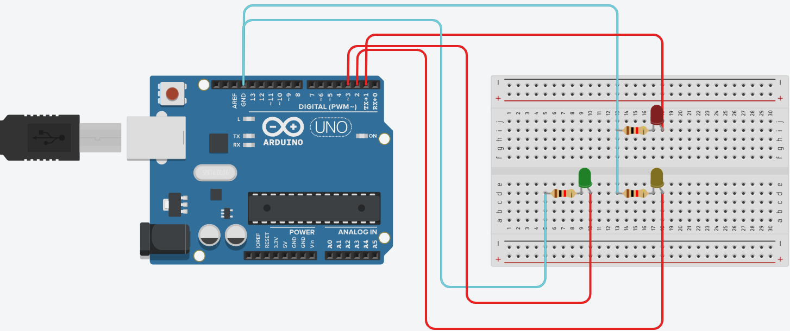

Arduino es una plataforma de hardware y software de código abierto para la creación de proyectos electrónicos interactivos. Didácticamente, se utiliza para enseñar conceptos de programación, electrónica y robótica de manera concreta, permitiendo a los estudiantes construir y probar proyectos físicos como robots o sistemas domóticos. La plataforma consiste en una placa microcontroladora (el "cerebro") y un software (Arduino IDE) para programarla con un lenguaje basado en C++.

Una protoboard, también conocida como placa de pruebas o breadboard, es una base de montaje para crear prototipos de circuitos electrónicos sin necesidad de soldar. Permite insertar componentes y cables en sus orificios, que están conectados internamente mediante láminas metálicas. Las conexiones son temporales, lo que facilita el ensamblaje, la modificación y la reutilización de circuitos para pruebas y aprendizaje.

| Dispositivo | Descripcion |
|
El LED (Diodo Emisor de Luz) es un componente optoelectrónico de estado sólido y de naturaleza semiconductora. Funciona mediante el fenómeno de la electroluminiscencia: cuando se conecta en polarización directa, los electrones cruzan la unión p-n y se recombinan con los huecos, liberando energía en forma de fotones (luz). El material específico de su chip semiconductor determina el color emitido. Es la tecnología de iluminación dominante hoy en día gracias a sus enormes ventajas frente a métodos tradicionales, destacando su alta eficiencia energética (convierte la mayor parte de la energía eléctrica en luz, no en calor), su larga vida útil (pudiendo superar las 50,000 horas de uso), su resistencia a golpes y vibraciones, y su rápido encendido. Sus aplicaciones son vastas y abarcan desde la iluminación general y semáforos hasta pantallas de visualización y electrónica de consumo. |
|  |  > > |